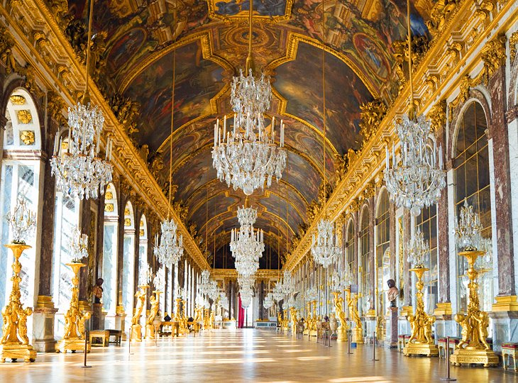
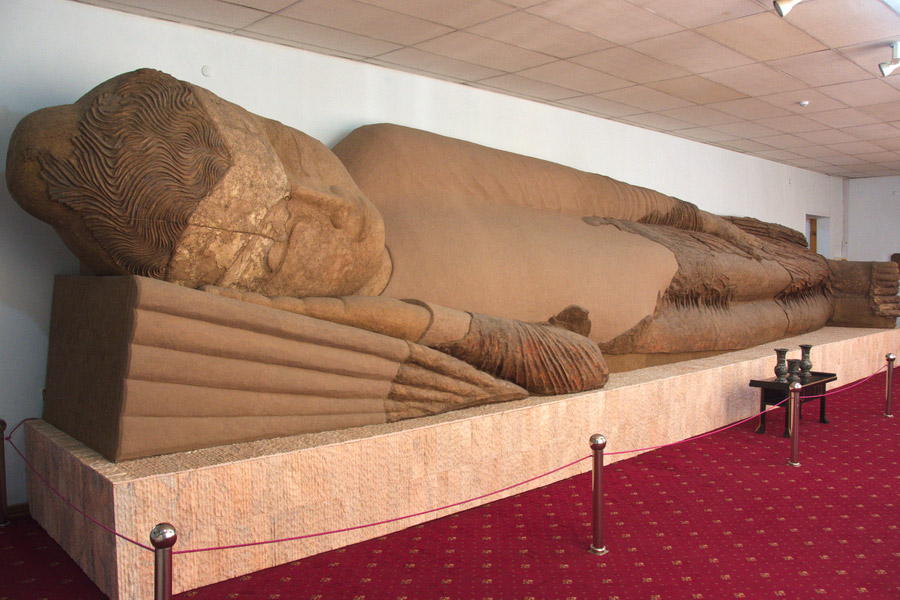

These are the five most memorable cities I've visited. I am giving short descriptions of my impressions.
Five most memorable cities
1. Rome (Italy. Rome changed my time perception with its B.C. artifacts. I will always want to go back to Rome!

2. Paris (France). Somehow I didn't find the city very romantic. But Versailles is the most beautiful place I've ever visited.
3. Mainz (Germany). I lived in Mainz for three years. It stays in my memory as a warm, beautiful and calm city.
4. Dushanbe (Tadjikistan). Sunny city which has the second biggest Buddha statue in the world!
5. Boston (USA). Boston is a place where I for the first time saw the ocean, watched whales, and tried lobster.